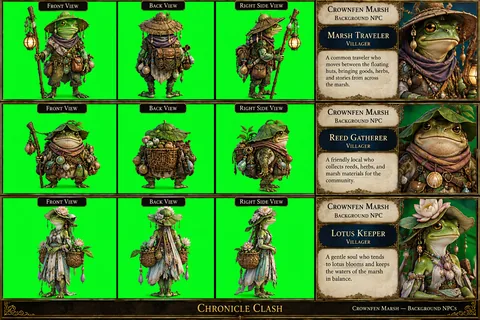
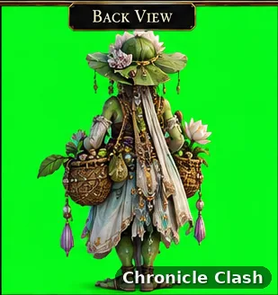
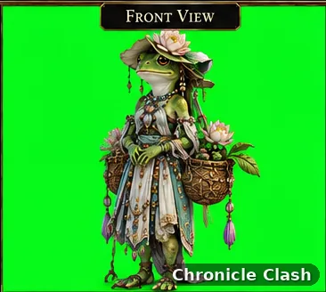
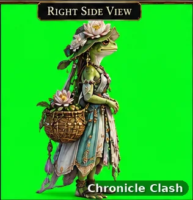
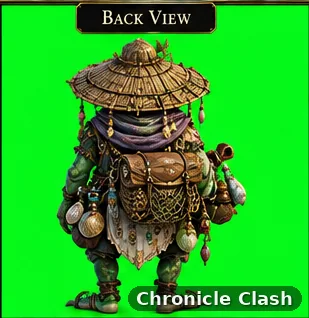
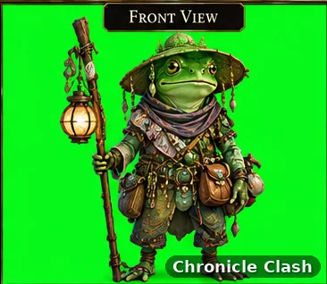
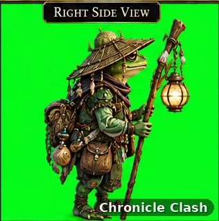
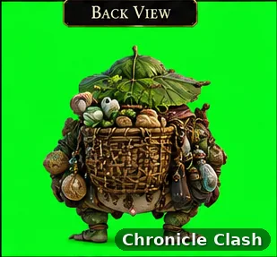
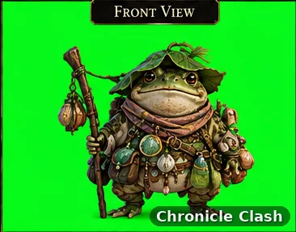
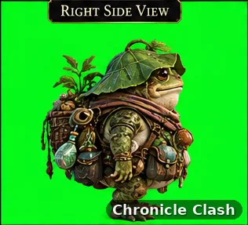

Gallery album
Characters
12 images. Select an image to view full size.

Character · Azure Bishop 
Character · Lysara 
Character · Crownfen Marsh · Background NPCs · Contact Sheet 
Character · Crownfen Marsh · Lotus Keeper · Back 
Character · Crownfen Marsh · Lotus Keeper · Front 
Character · Crownfen Marsh · Lotus Keeper · Right Side 
Character · Crownfen Marsh · Marsh Traveler · Back 
Character · Crownfen Marsh · Marsh Traveler · Front 
Character · Crownfen Marsh · Marsh Traveler · Right Side 
Character · Crownfen Marsh · Reed Gatherer · Back 
Character · Crownfen Marsh · Reed Gatherer · Front 
Character · Crownfen Marsh · Reed Gatherer · Right Side